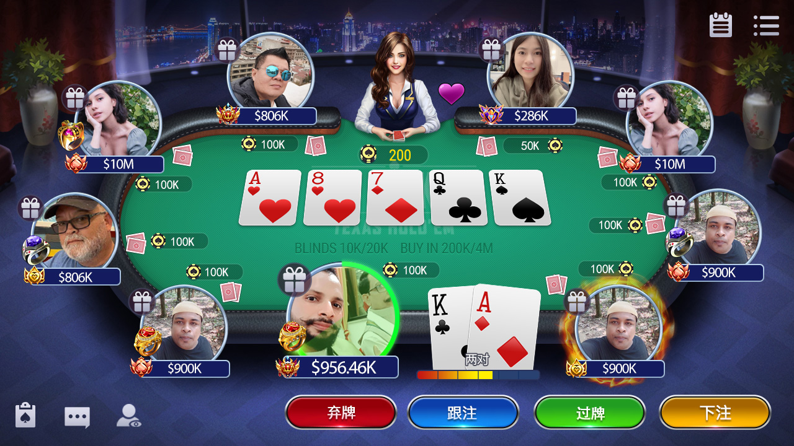
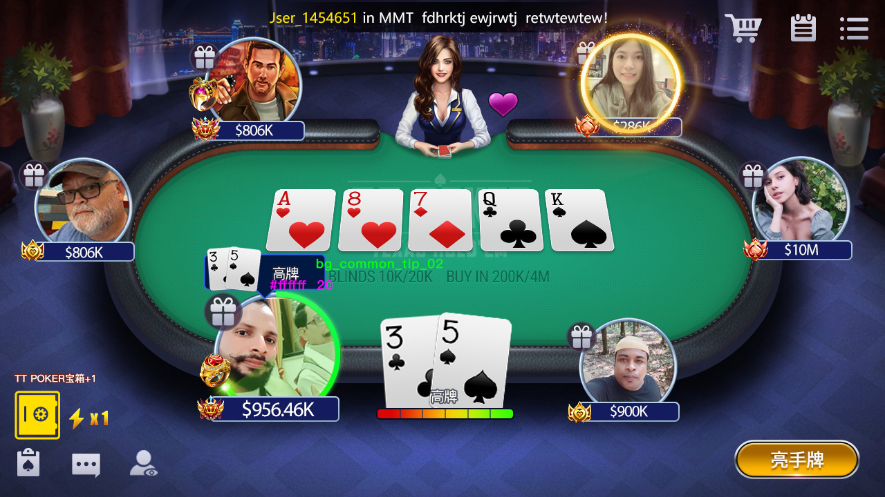

Product Presentation
德州扑克产品功能展示
产品资料展示大厅、经典牌桌、比赛和俱乐部体验。每项功能是否可由当前公开仓库完整构建，需要单独验证。
玩法与比赛入口
现有产品资料包含经典德州扑克、AOF、6+ 短牌、Sit & Go、多桌锦标赛和排位赛等入口。玩法规则、盲注结构、报名、奖励和结算必须由服务端权威控制并接受测试。
实际截图




截图和源码范围必须分开
截图证明产品界面曾被展示，但不能证明当前公开目录包含所有客户端资源、后台、数据库、支付、运营或部署代码。公开仓库缺少 Unity Assets，因此不应描述为可直接构建的完整 Unity 客户端。
俱乐部与房间
截图展示俱乐部创建、房间列表和多人牌桌。正式系统还应覆盖权限、邀请、风控、审计、内容治理、隐私和申诉流程。